Diagnostic accuracy under unmodeled DIF

The ability of a model to accurately classify an individual is highly dependent upon the quality of the measurements used as input variables. Real world data is messy: items may be biased, data may be missing, and it models may be unable to capture necessary complexity. When this happens, methods lose accuracy, and the people most likely to be misclassified are often those already underserved. The CARAT lab focuses on methodological innovations that address these limitations through connections between psychometrics and machine learning. Much of our applied work centers on misophonia, where reliable measurement is still being built.
Building and comparing classifiers for psychological data, and asking when a machine learning model beats a traditional psychometric one.
Evaluating and sharpening measurement instruments, from full-length scales to efficient short forms that keep their precision.
Asking whether findings hold up, with a particular focus on the replication of measurement, and modeling good open science practices.
Random forests, CART, regularized regression, genetic algorithms, etc. for classification and variable selection under realistic conditions.
Using Monte Carlo simulation to stress-test methods under realistic data conditions to make practical recommendations to applied researchers.
Diagnostic accuracy under unmodeled DIF
Variable selection when data are incomplete
Measuring and characterizing misophonia
I am currently looking to mentor new graduate and undergraduate level researchers. I also welcome collaborations that bring quantitative methods to applied measurement problems. Please don't hesitate to reach out!
Email Catherine